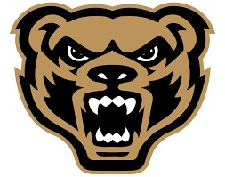

Education
Bachelor of Science in Information Technology
Oakland University, Rochester, MI
GPA: 3.3 | Expected Graduation: January 2026

Volunteerism | Community Leadership
Volunteered with City Week each year in Detroit with Woodside Bible Church to work on local underprivileged homes that needed to be fixed (2012-2016)
Traveled to Mescalero, New Mexico to host a Vacation Bible School to help Apache Native Americans, cleaned up the surrounding area, and raised money for the tribe (2017, 2018, & 2019)
Helped a neighbor go to the hospital throughout the year when he couldn’t make it to the car and his wife was unable to lift him (2018)
Captain of the Varsity Football and Basketball teams at Rochester High School (2014 and 2015)
Experience
Patient Escort | Ascension Hospital, Rochester, MI
Transported patients from their room to other appointments they may need for their health.
Coordinated with other departments to optimize time and create the best schedule for each patient.
Transferred patients from stretcher to bed and transferred active IVs while moving patients to appointments.
Communicated in an empathetic fashion with all patients; well versed in making patients feel comfortable while transferring them and explaining what to expect for each test.